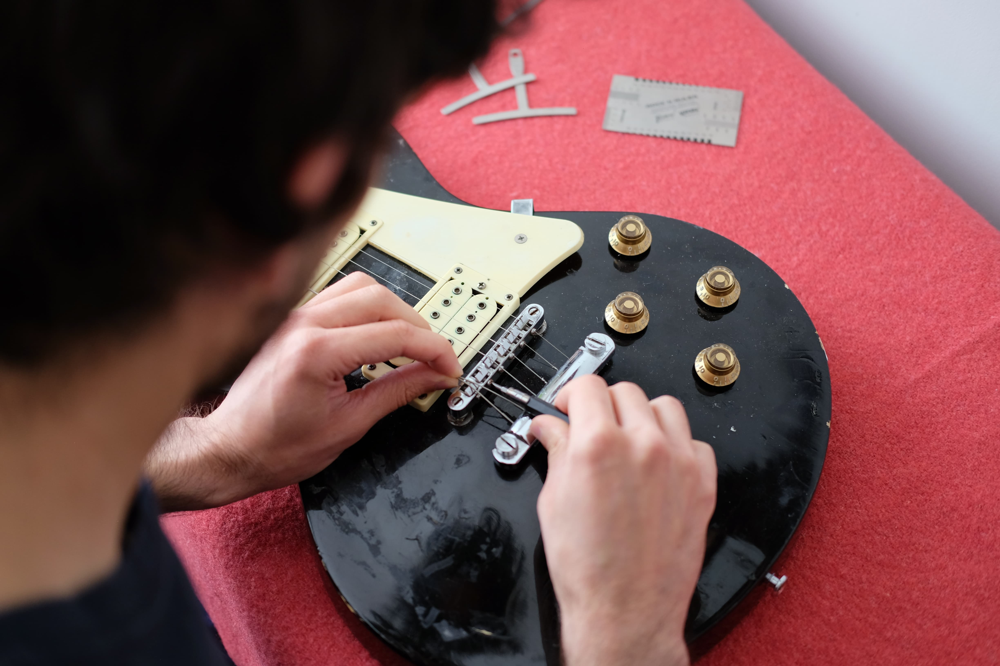
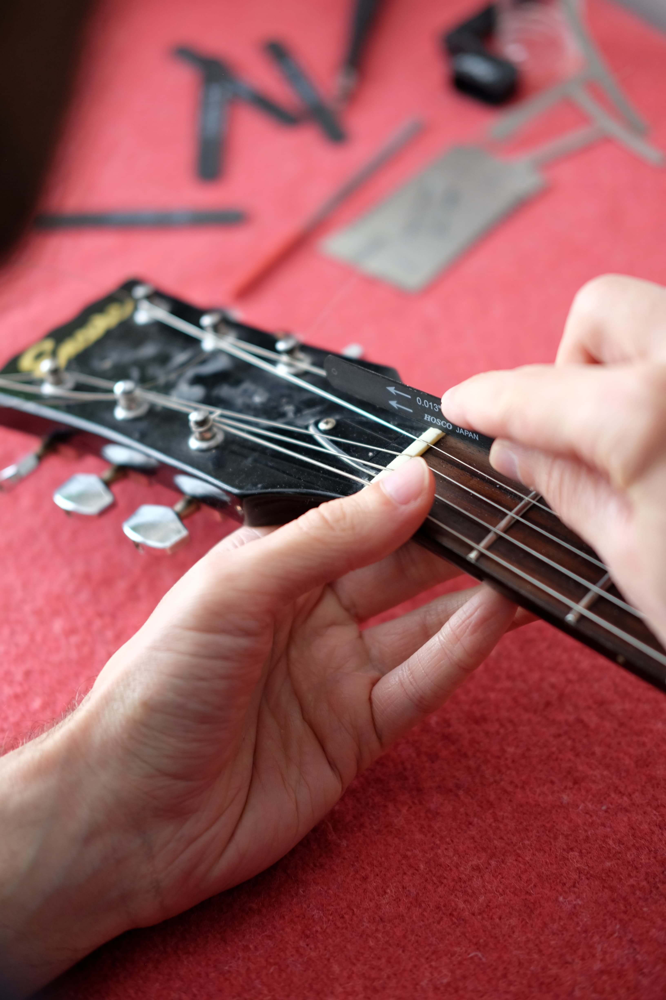
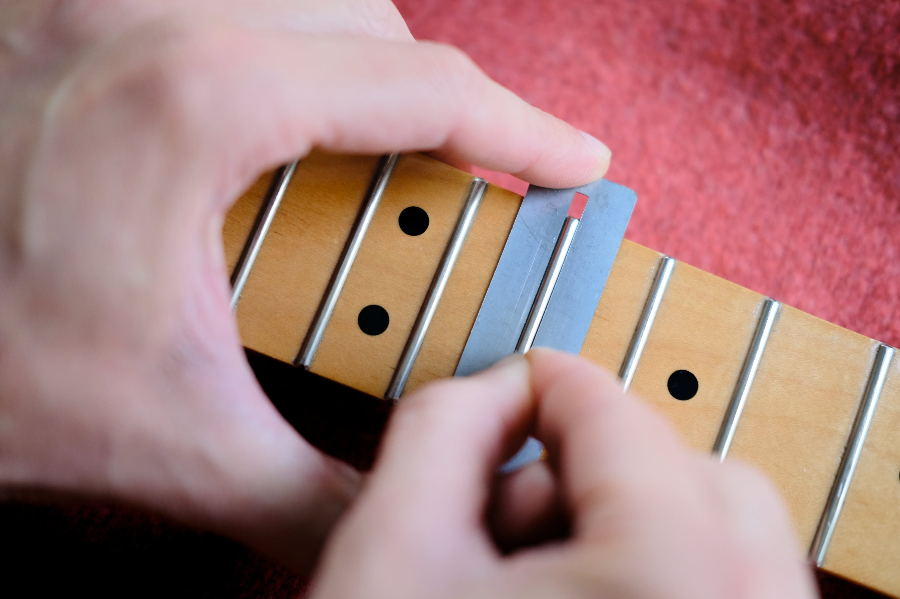
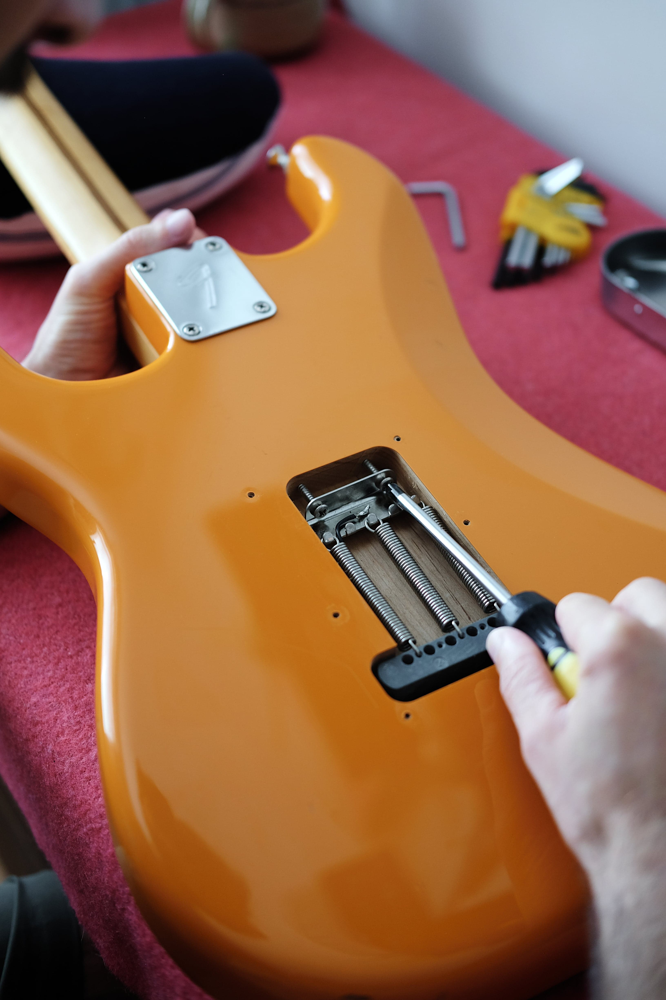
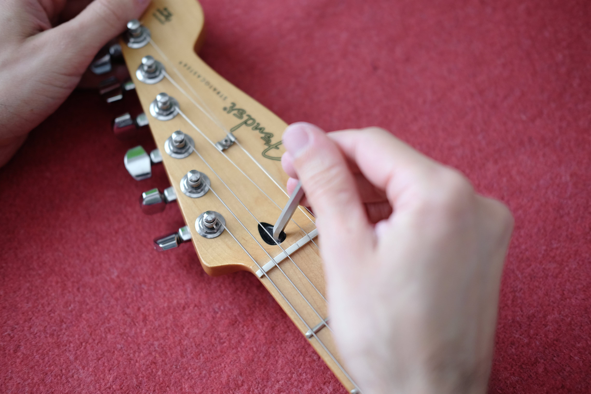
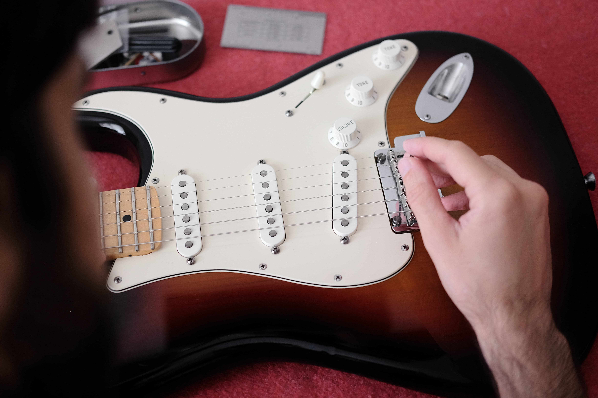
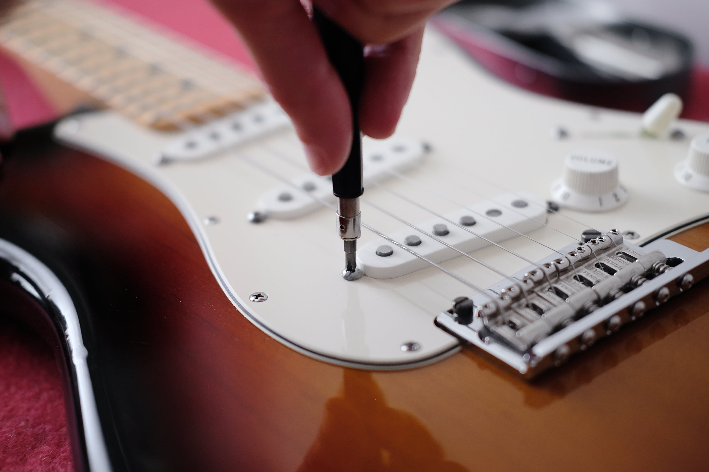

OUT OF PHASE is the guitar workshop of Bristol-based João Chaves. I've been playing music for more than 20 years, with the guitar always at the centre of it. When I bought my first guitar, the shop recommended a setup, promising it would make the instrument easier and more enjoyable to play. As a teenager, I had no idea what a setup actually involved, so I trusted their advice. The guitar played better afterwards, but it also felt like a one-size-fits-all approach rather than something tailored to the instrument itself.
That experience sparked my curiosity. I started reading books on guitar setup and maintenance, determined to understand what actually makes an instrument play its best. I'd always loved taking things apart to see how they worked, and the guitar was no different. The more I learned, the more I realised that no two instruments are the same. Every guitar responds differently and deserves an individual approach.
Later, when I began touring, keeping every instrument performing reliably became essential. We weren't able to have a dedicated guitar technician, so I worked alongside local luthiers, learning the ins and outs and taking responsibility for maintaining the band's guitars on the road.
Although I no longer tour, that passion has never left me. Today, every instrument that comes through my workshop is assessed on its own specific caracteristics. Rather than aiming for a standard setup, I focus on understanding what each owner and guitar needs to perform at its best.